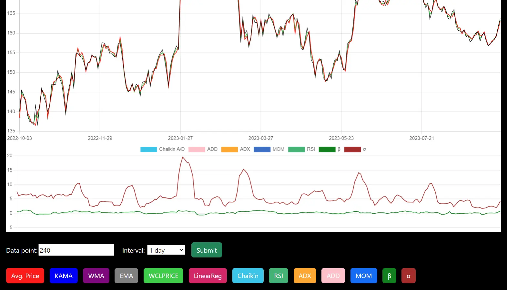
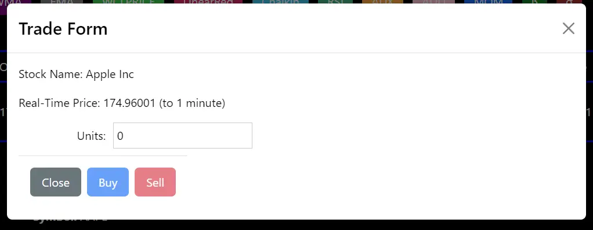

TradeSims is a stock trading simulator app, which allows users to simulate the buying and selling of stocks
Users can check their trading profits (or losses) and perform charting. There are various charting technical
indicators available to aid users in identifying buy/sell signals. Other features include listing of trades
history and current cash to stocks ratio.
Just like Tradeus, it is built with Angular(frontend), Spring Boot
(backend) with SQL, Redis and MongoDB as databases.
The following lists the features implemented and technology used.
Angular (TypeScript)
Spring Boot (Java)
Financial data (web API)
Chart JS
Bootstrap
Using TradeSims
On log in, users will be directed to the dashboard. Users can view their cash to stock ratio and the
proportion of the different stocks in the portfolio.
The total profit (loss) in absolute terms and percentage are presented at the top. Doughnut charts
present data on the user's cash to stock ratio as well as the proportion of the
different stocks in the portfolio. The table below presents data on the performance of each trade.
In addition, users can view their trade history on the dashboard (not shown).
Users can view stock charts of listed companies (limited to US stocks). They can zoom in or
out to view less or more data points respectively by clicking the buttons on the top right.
Users are provided with a buffet of technical indicators with their charts to aid them in making
trading decisions.

Users place buy/sell orders by providing the number of units and the buy/sell action. The order will
be executed using stocks prices which are accurate to 1 minute.

Users can also search for company data using the search bar.
View the video below for more details about TradeSims.